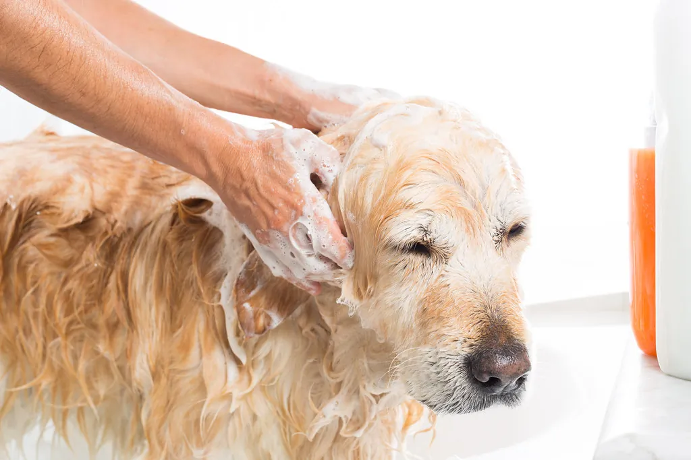
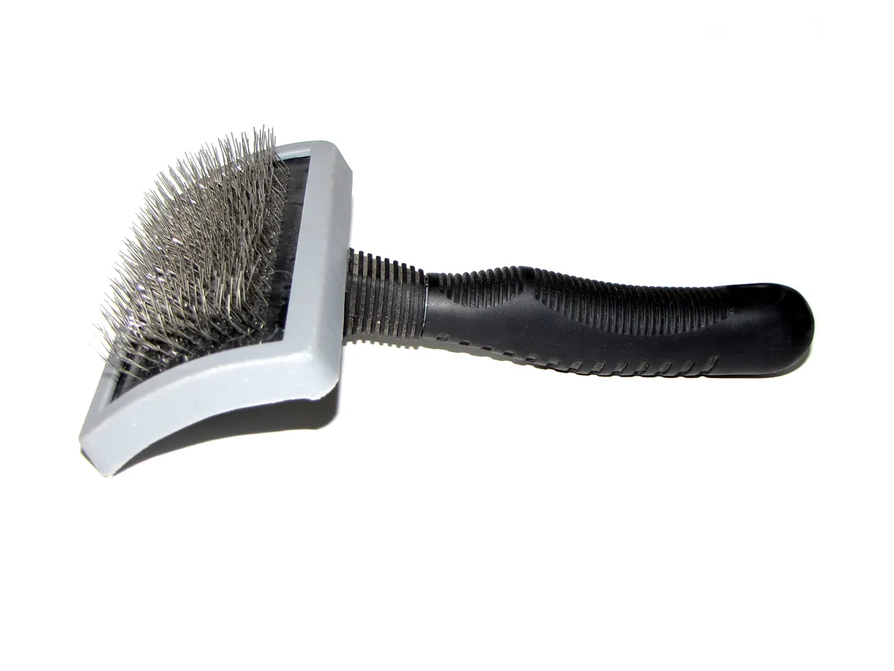
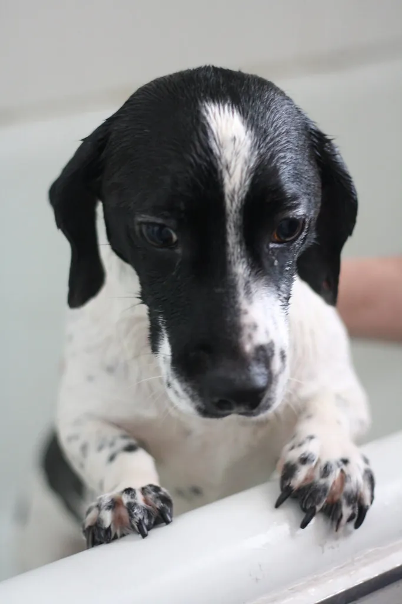

Baño y secado
Productos de alta gama adaptados al tipo de pelo, secado a mano y cepillado final.
Desde 18€GlamDog · Salón canino en Oviedo
Baño, corte y estilismo con productos de alta gama y la calma de un equipo con formación veterinaria. Especialistas en razas de pelo largo.
Sobre nosotros
GlamDog es un salón canino en el centro de Oviedo. Al frente está Tati, auxiliar veterinaria, así que cada sesión se piensa también desde la salud de la piel y el pelo, no solo desde la estética.
Trabajamos con productos de máxima calidad y nos hemos especializado en razas de pelo largo — Shih Tzu, Caniche, Perro de Agua Español, Bichón Maltés y Yorkshire Terrier — sin dejar de atender a cualquier perro que necesite un buen baño o un corte a su medida.
También encontrarás una pequeña selección de accesorios, pienso y productos de grooming en el propio salón.
Servicios
Precios orientativos — el importe final depende del tamaño, la raza y el estado del pelaje. Te lo confirmamos sin compromiso antes de la cita.

Productos de alta gama adaptados al tipo de pelo, secado a mano y cepillado final.
Desde 18€Estilismo a tijera adaptado a cada raza, con acabado de exposición si tu perro lo necesita.
Desde 28€
Eliminación del subpelo muerto en razas de doble capa: menos muda y una piel más aireada.
Desde 25€
Corte y limado de uñas, y limpieza de oídos — incluido en cada cita o como servicio suelto.
Desde 8€También hay tienda: accesorios, pienso y productos de grooming.
Por qué GlamDog
Cada sesión tiene en cuenta la piel, las orejas y las uñas de tu perro — no solo el corte.
Shih Tzu, Caniche, Perro de Agua Español, Bichón Maltés y Yorkshire Terrier son nuestro día a día.
Cuidamos lo que usamos sobre su piel tanto como el resultado final del corte.
Reseñas
Es el mejor sitio de peluquería canina de Oviedo sin duda. El servicio es impecable y no puedo estar más contenta con Taty, que es puro amor.
Bubu Bubu
Mi perra es muy nerviosa y Tatiana tiene una empatía increíble con los animales. No reconocía a mi perra de lo tranquila que estaba — un 10 de 10.
Diana Echeverri Gómez
Estoy encantada con el trato, profesional y muy atenta. Mi perrito Iker sale muy contento, y el salón siempre huele muy bien — se nota la limpieza.
Maria Teresa Chamorro
Contacto
| Lunes — Viernes | 10:00 – 19:00 |
| Sábado y domingo | Cerrado |